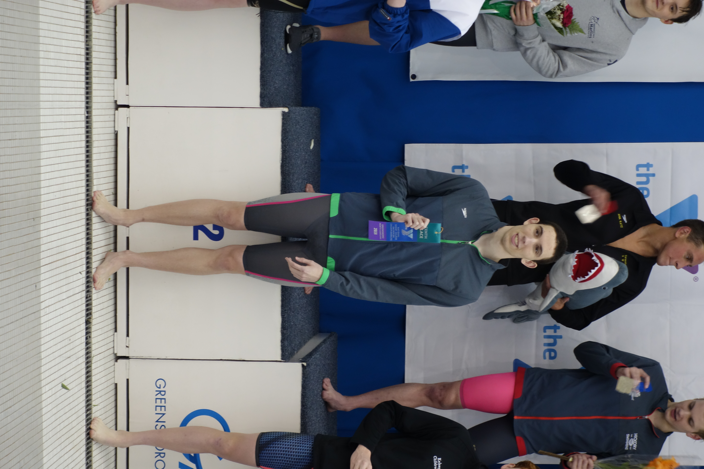

I joined the North Oakland Waves Swim Team when I was 8 years old. I swam for the team until I was 17 years old.
While I swam there I won many medals and set many team records.
When I was a freshman, I joined the Rochester Adams High School Swim Team
While in high school, I was named a team captain, won a state championship, and helped my team to a 2nd place finish at the State Championship meet
During high school, I was recruited by several colleges. Among these were the University of Minnesota and the University of Wisconsin
In the fall of 2017, I committed to swim at the Unviersity of Wisconsin
I am currently a member of the University of Wisconsin Swim Team
I practice 20 hours a week with the team and travel to competitions
I hope to continue improving and do well at the Big Ten Championships next year and hopefully make the NCAA Championship meet